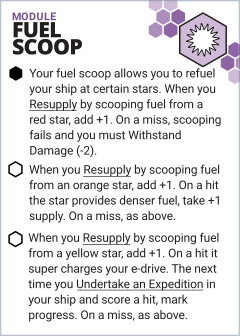

This asset for Starforged adds a fuel scoop module to your ship. Perfect for explorers charting systems in the Expanse or cheap traders who don't want to pay for fuel. Just don't fly too close!

Fuel Scoop
Your fuel scoop allows you to refuel your ship at certain stars. When you Resupply by scooping fuel from a red star, add +1. On a miss, scooping fails and you must Withstand Damage (-2).
When you Resupply by scooping fuel from an orange star, add +1. On a hit the star provides denser fuel, take +1 supply. On a miss, as above.
When you Resupply by scooping fuel from a yellow star, add +1. On a hit it super charges your e-drive. The next time you Undertake an Expedition in your ship and score a hit, mark progress. On a miss, as above.
